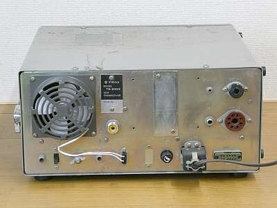
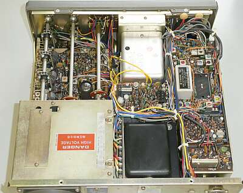
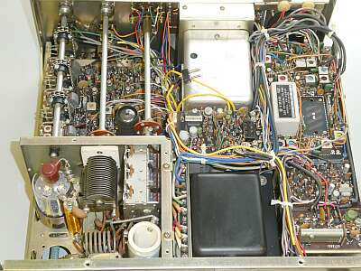
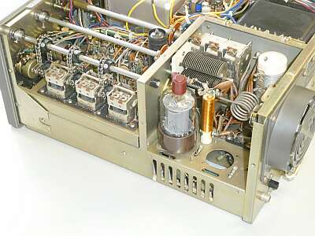
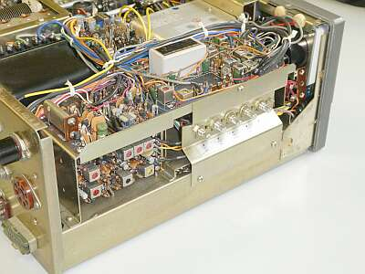
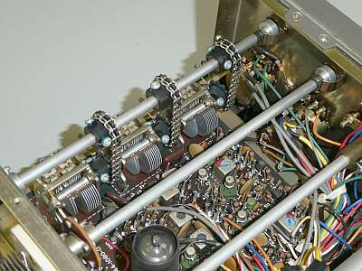
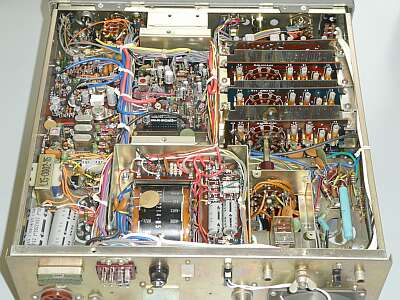
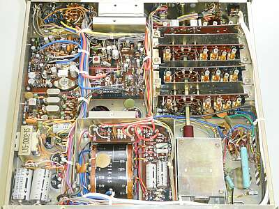
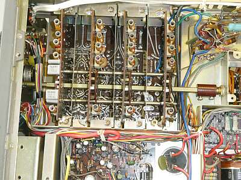

 |
リアパネルです
DC-DCコンバータ非搭載ですので、ずいぶんすっきりしています
|
 |
シャーシ上面
外ケースは、保管状態が良くなく、とても汚れていますが、内部はきれいです
ＣＷフィルタは、非搭載です（オリジナルのまま）
|
 |
シャーシ上面 終段部のシールドを外して写しています
１０Ｗモデルですので、終段管は、Ｓ２００１が１本です
|
 |
サイドから、終段部のシールドを外して写しています
１０Ｗモデルではオプションであった空冷ファンが取り付いています |
 |
上写真の反対サイドです
フィルタはデフォルトのまま、ＣＷフィルタはオプションです |
 |
ＲＦ部です
ＴＲＩＯでは、ＴＳ-５１０以降、周波数の変化で中和ずれを防ぐ意味で、ＲＦ同調ＶＣのステーターをアースから浮かせて使用しています
そのため単ＶＣを並べてチェーンで駆動する構造がとられています（採用初期はゴムベルトによる駆動で、経年変化で切れたものです）
|
 |
シャーシ底面
|
 |
バンド切替タンクコイル部と、アンテナ切替リレー部にはシールドが用意されています |
 |
ＹＡＥＳＵではお馴染みの？ＲＦコイル部を覆うシールド板はありません |
|
５０年選手です
いつの日かから、お蔵入りした製品が半世紀を経過してどのような状態になっているのか、変な興味で入手しました
メーカー違いで同世代の ＹＡＥＳＵ ＦＴ-２０１も入手してみました
本機ですが、外装の酷い痛み（何かが流れて出来たような痕跡があり、それが原因で錆びた？）、フロントパネル（特にツマミ、メーターの赤塗装）の日焼けと、良い条件での保管ではないことは一目瞭然です
ケースを外して中を見ると、外装ほど傷んではいません、むしろきれいなくらいです
ご紹介の写真は、一生懸命クリーニングした後に撮ったものです
通電は、問題なくできました（ヒューズの容量は、事前にチェックしています）
しかしスイッチの接点接触不良、ＶＲのガリなどは半端ないくらい酷いものでした
まずは、これらを中心にクリーニングからスタートです
かなり大変でしたが、クリーニングだけで最低の送受信をするところまでは復旧しました
送信出力は、全バンド１８W程度得られています
意外といえば意外です
最後に残った大きな問題は、この時期のＴＲＩＯ製品によくあるＶＦＯのＶＣローター軸の接触不良
まさしく、お前もか・・・です
ＶＦＯユニットの分解が必要な事態です
Ｓ／ＡＬＣメーターのゼロ点調整が必要・・・など、順に点検して対応を行う必要がありそうです
|
| to be continued |